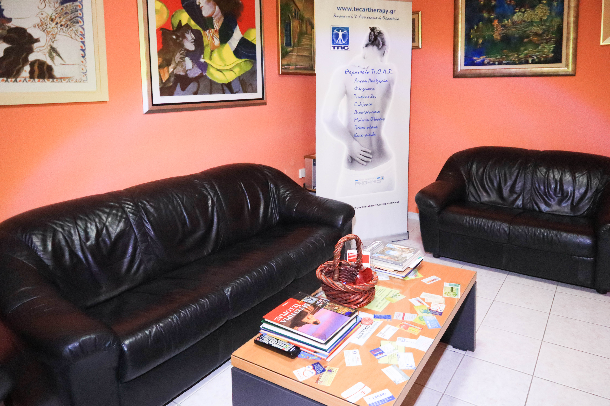

"From the first session I felt that the treatment was built around my needs, not a generic routine. I left each appointment knowing exactly what we were working towards."Maria K., Argostoli

Comments & FAQ
Honest words from people who have experienced care at IASIS.
Every person who comes to IASIS brings a different story. These comments reflect the care, attention, and results that guide our work every day.
Comments
What patients say about IASIS
"The clinic is calm and beautifully equipped. As a visitor to Kefalonia with a long-standing shoulder problem, I was impressed by how thorough and clear the assessment was."James T., London
"Clinical Pilates became a turning point in my recovery after recurring lower back pain. I now feel stronger and far more confident in how I move."Eleni P., Argostoli
Practical questions
Useful answers before the first visit
In many cases, yes. The first session can be used to understand your problem and decide whether treatment can begin safely or whether further medical review is needed.
A session is typically planned around careful assessment, treatment, and movement work, with enough time for clear explanation and progression.
No. IASIS also supports chronic musculoskeletal pain, neurological presentations, postural dysfunction, and movement retraining.
Clinical Pilates can support people who want better posture, improved trunk stability, safer movement patterns, and structured prevention after recovery.